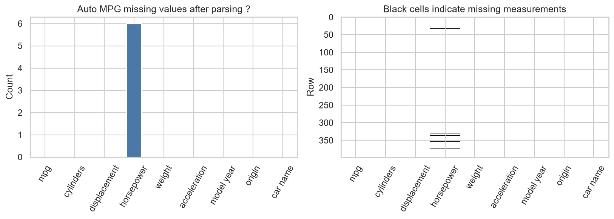

The Activity
Unit 2 · Run 28 October 2026 · Tutor: Dr Elizabeth Oladapo · Evidences learning outcome 2
Activity guidance: complete the exploratory data analysis tutorial on the Ames house-price data, then undertake similar analysis of the Auto MPG dataset: identify missing values, estimate skewness and kurtosis, draw a correlation heat map and scatter plots, and replace the categorical origin values with numbers.
Findings
| Task | Result |
|---|---|
| Missing values | A default load reported none. Six horsepower entries held ‘?’, so the column loaded as text. Parsed, they were left missing (392 of 398 rows); a median fill moved the horsepower to mpg correlation by only 0.005. |
| Skewness and kurtosis | All seven skewness estimates are positive; horsepower is the most skewed (1.09, excess kurtosis 0.70). Ames SalePrice skews 1.88, and 0.12 after a log transform. |
| Correlation and scatter plots | Weight, displacement and horsepower correlate with mpg at −0.78 or stronger, and with each other at 0.86 or more, a collinearity to assess before regression. For horsepower, Spearman’s rho (−0.85) exceeds Pearson’s r (−0.78), which suggests a curved relationship. |
| Encoding | Origin arrives coded 1, 2, 3. The labels were restored and one-hot encoded, since a model would otherwise read the codes as an order. |

The main finding is that a column loaded as text can hide missing values behind a token, so parsing types and checking ranges come before modelling. The data also carry obligations: the UCI release is licensed under CC BY 4.0 and needs attributing (Quinlan, 1993), as the house data need De Cock (2011). The cars are US-market models from 1970 to 1982, so fuel-economy claims for today’s cars would be an extrapolation.
Evidence
I ran the notebook on my own computer. Its first code cell records the run, and all 48 code cells completed without errors:
Run by Anne Dayer (student 39359) on my computer on 28 October 2026 at 15:03 UTCAI Acknowledgement
Codex was used to assist in identifying appropriate code solutions and to proofread and refine the code I produced. Claude and Grammarly supported proofreading, language refinement, and formatting of my written text. All final decisions, analyses, interpretations, conclusions, and recommendations are my own.
References
De Cock, D. (2011) ‘Ames, Iowa: alternative to the Boston Housing Data as an end of semester regression project’, Journal of Statistics Education, 19(3). Available at: https://doi.org/10.1080/10691898.2011.11889627
Quinlan, R. (1993) Auto MPG [Dataset]. UCI Machine Learning Repository. Available at: https://doi.org/10.24432/C5859H